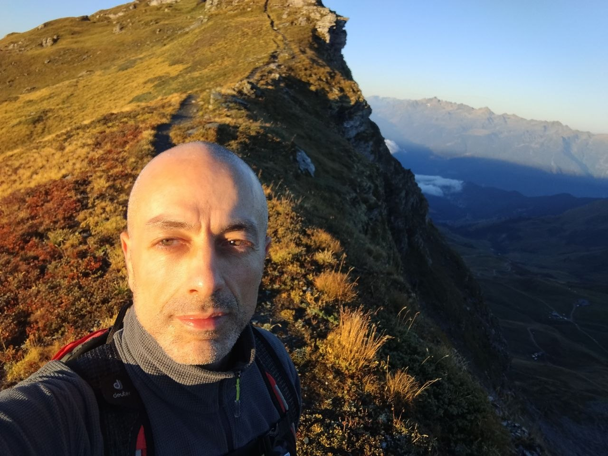
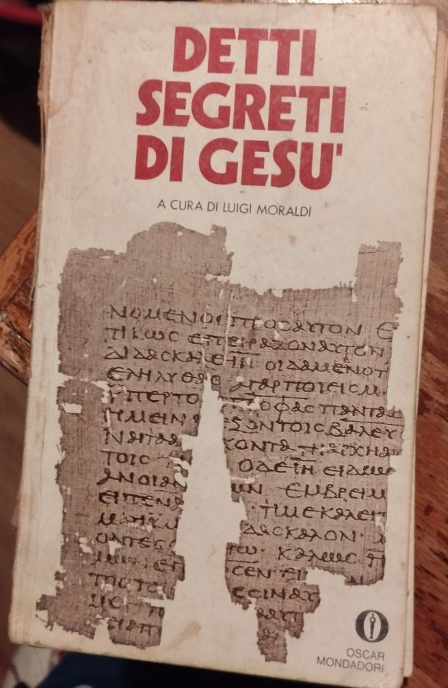

Simone Pozzi
Simone Pozzi · Alla ricerca della Patria di Luce

La ricerca spirituale accompagna la mia vita fin dalla prima infanzia. I primi ricordi legati al mondo dello spirito risalgono a quando avevo cinque o sei anni. Alle prime esperienze interiori si affiancò presto la meditazione, che iniziai a praticare da bambino attraverso le arti marziali. Da lì nacque il mio interesse per le energie sottili e, successivamente, per la pranoterapia, che praticavo già da ragazzo.
Nella biblioteca di famiglia c’era un vecchio libro, Detti segreti di Gesù, curato da Luigi Moraldi (Oscar Mondadori, 1975). Ricordo ancora quanto mi colpì un passo nel quale il mondo veniva paragonato a un cadavere. Quelle parole alimentarono interrogativi che mi accompagnavano già da tempo: che cos’è realmente questo mondo? Da dove veniamo? E che cosa siamo?

Intorno ai tredici anni cominciai ad approfondire l’esoterismo, cercando risposte che non riuscivo a trovare nei testi religiosi tradizionali, ai quali mi ero già avvicinato. A ventitré anni diventai vegetariano, una scelta che fa ancora parte del mio percorso.
Dai diciotto anni iniziai a frequentare monasteri, eremi, templi e ashram di tradizioni differenti. A ventisette anni lasciai il mio lavoro, dove ricoprivo il ruolo di caporeparto, per vivere alcuni mesi in un eremo sulle colline veronesi. Seguirono circa un anno in un monastero benedettino aperto al dialogo interreligioso, un periodo di formazione in seminario e un soggiorno in India, presso un ashram.
Non cercavo tanto una religione alla quale appartenere, quanto una risposta a domande che sentivo mie fin dall’infanzia. Fu nell’incontro con la Gnosi, e in particolare con il dualismo radicale, che riconobbi una risposta alle domande maturate durante quel lungo percorso: il Padre buono non è il creatore di questo mondo, la materia non è la nostra patria e lo Spirito non vi appartiene. Non cercavo una spiritualità capace di rendere più confortevole questa esistenza, ma una conoscenza che ne mostrasse la prigionia e la possibilità di liberarsene.
Nel 2009 diedi vita all’associazione gnostica Chiesa Catara, attraverso la quale sviluppai attività di divulgazione e approfondimento spirituale. Il catarismo rimane una parte importante del mio cammino, ma non desidero racchiudere la mia ricerca entro i confini di una sola tradizione.
Conferenze e divulgazione
Nel corso degli anni ho avuto occasione di condividere la ricerca sul catarismo anche attraverso incontri e conferenze pubbliche.

Le mie pubblicazioni
Nel corso degli anni ho affidato alla scrittura alcune tappe della mia ricerca:
- Sulle Ali di Dio — un diario del periodo vissuto nell’eremo e del cammino verso la Gnosi.
- Stranieri di passaggio — un romanzo simbolico sulla condizione umana e sulla ricerca della liberazione.
- Esegesi del Vangelo di Tommaso secondo uno gnostico — una lettura personale e spirituale dei detti attribuiti a Gesù.
Puoi trovare maggiori informazioni nella pagina I miei libri.
Oggi risiedo in Paraguay e continuo a condividere riflessioni e approfondimenti attraverso il canale Meditazione e Gnosi, con lo stesso desiderio che mi accompagnava da bambino: comprendere la nostra origine, la nostra condizione e la possibilità di una vera liberazione interiore.